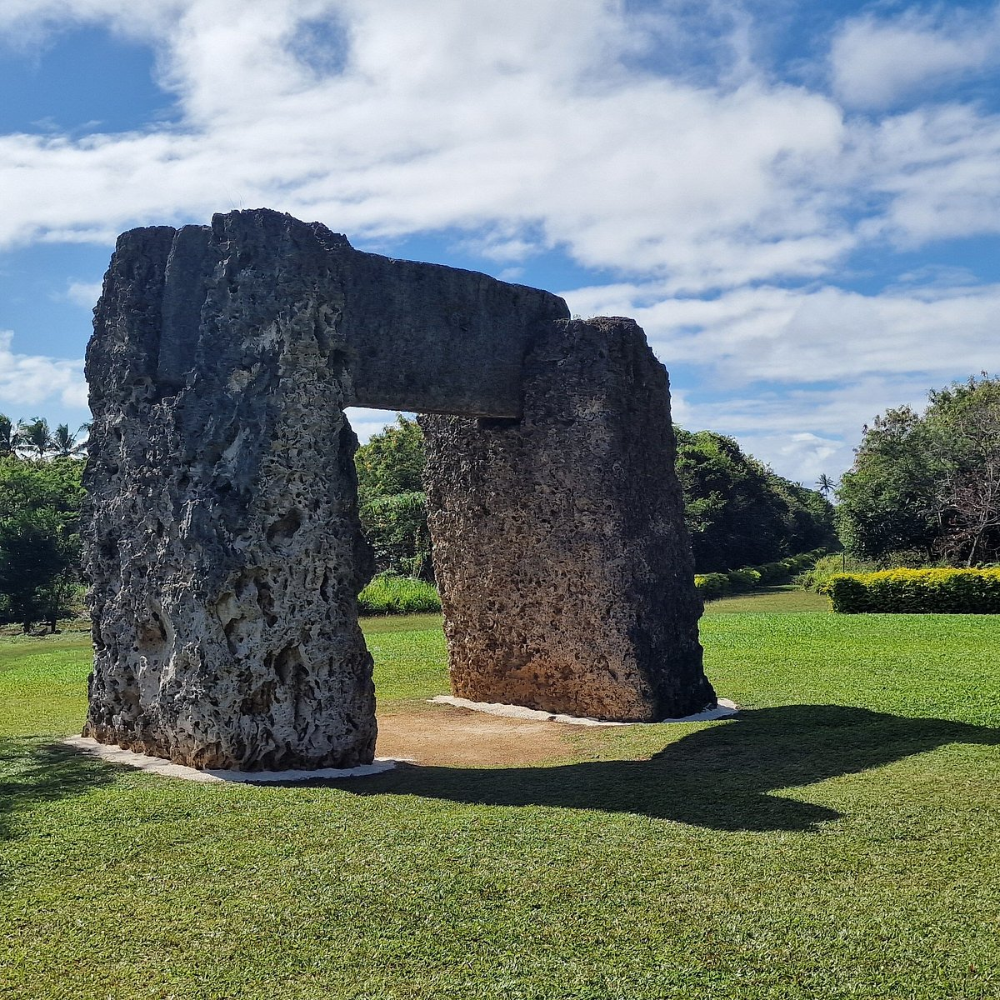

Ha'amonga 'a Maui

This huge stone gateway is made of three coral limestone slabs: two uprights with one slab laid across the top. It was built long ago, probably in the 1200s, and many people believe it was used to track the sun at the solstices. It sits on the northeast side of Tongatapu, Near Niutoua.